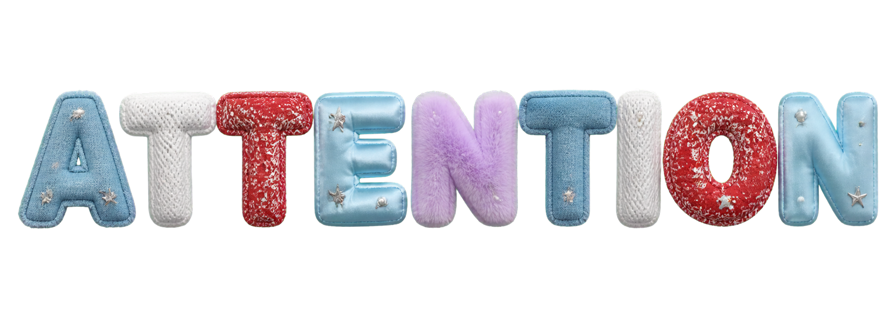
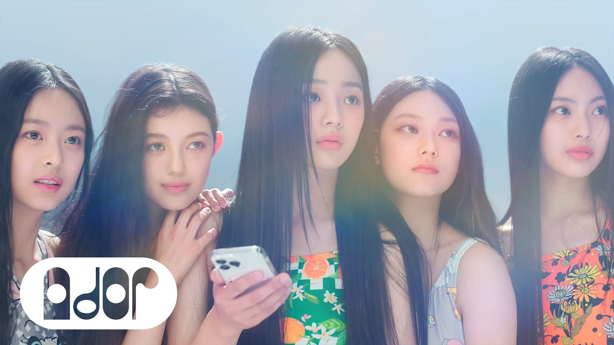
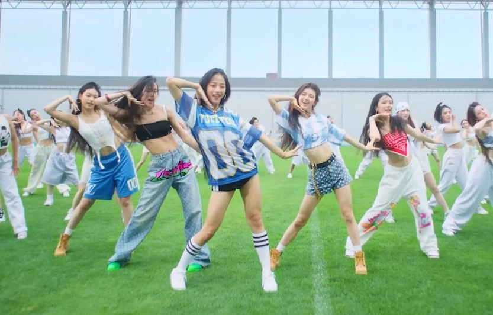
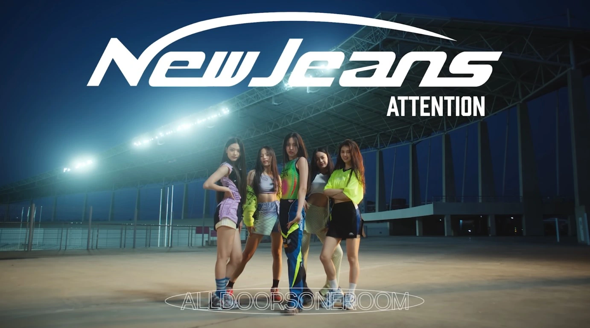
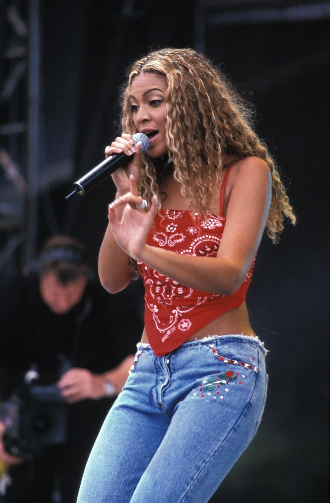
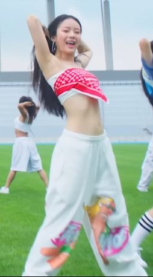
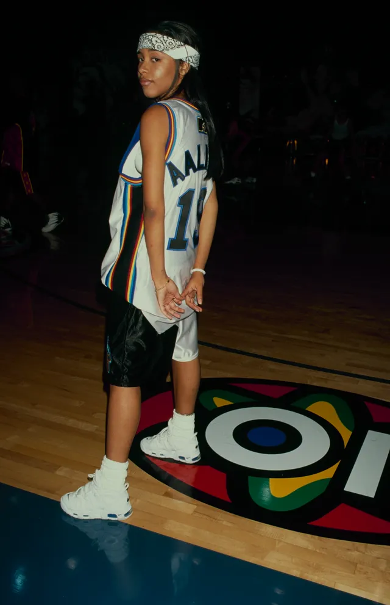
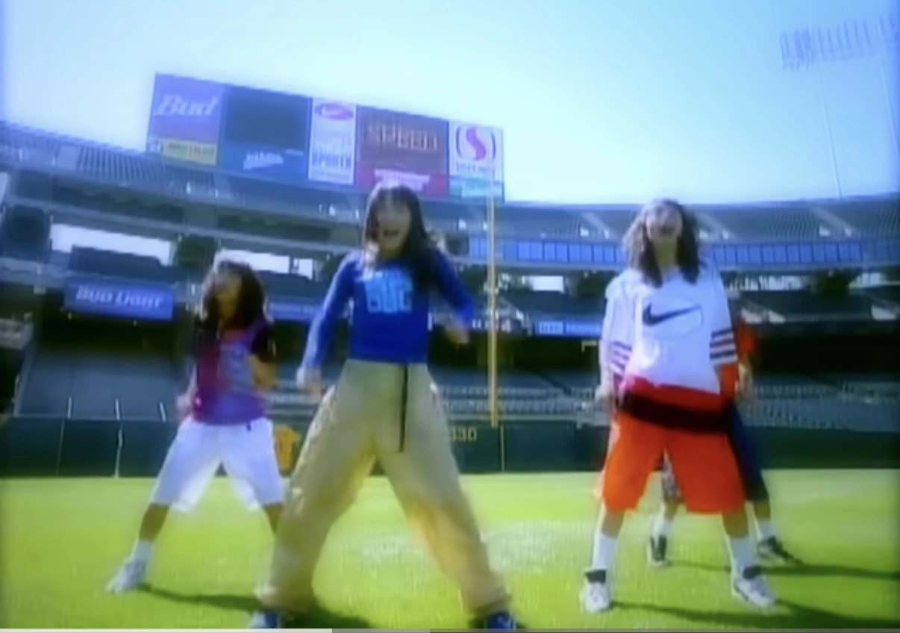
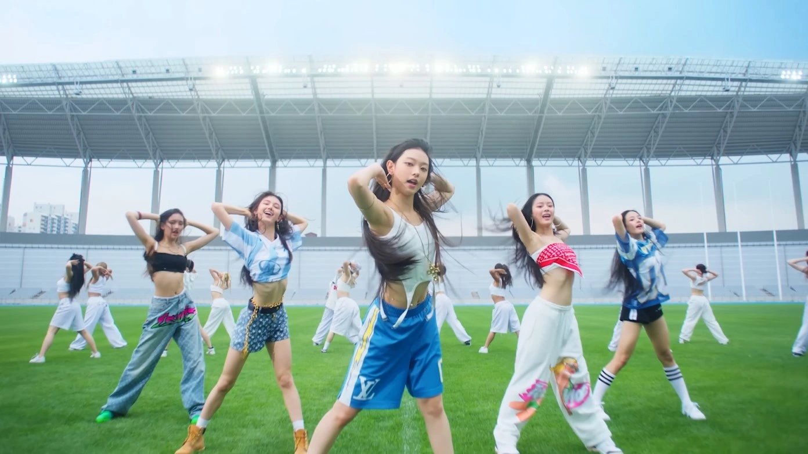

FASHION / ARTICLE 001
COLUMN
ATTENTION

NewJeans「Attention」の ファッションを読み解く
スポーツウェアとHIPHOP、その先にあるNewJeansらしさ

NewJeansの始まりを告げた「Attention」‼️
そのスタイリングでまず目に入るのが、アメフトやサッカー、バスケットボールといったスポーツの要素です。
スポーツユニフォームを街着として取り入れるブロークコア的なスタイルを軸に、90年代後半から2000年代のHIPHOPやR&Bのムードをミックス。そこにデザイナーズのアイテムまで加わり、ただのY2Kでは終わらないスタイルになっています。
一見すると「Y2K」の一言でまとめられそうな衣装ですが、ひとつずつ見ていくと、その背景にはいろいろなカルチャーが隠れています。
目次
スポーツウェアをストリートへ
象徴的なのが、ミンジが着用するルイ・ヴィトンのアメフトジャージ。NFLのロサンゼルス・チャージャーズをモチーフにした一着です。
そこにマリン・セルのゴールドネックレスやフープピアスを合わせています。
スポーツユニフォームにゴールドアクセサリー。この組み合わせだけでも、HIPHOPやストリートの空気をかなり感じます。

画像引用：https://www.youtube.com/watch?v=x8RIixqumUc
そして足元にもその空気は続きます。
ミンジが履くNikeのAir Force 1、ハニのAir Jordan 3、ダニエルのTimberland。そしてヘインの足元には、ヴァージル・アブローがデザインしたおそらく元ネタがAF1なルイ・ヴィトンのLV Trainer。
こうして足元だけ見ても、NikeやTimberlandのようなストリートやHIPHOPで長く愛されてきた定番にそのカルチャーをラグジュアリー側から再解釈したスニーカーが混ざっています。
さらに面白いのが、5人それぞれのスタイリングにLouis Vuittonのアイテムが入っていることです。ミンジ、ダニエル、ヘインはボトムス、ハニとヘリンはトップスと、全員がお揃いで着るのではなく、それぞれ違う形で取り入れています。
HIPHOPには、ジュエリーや高級車、ラグジュアリーブランドなどを身につけることで、自分の成功や豊かさを見せる「FLEX」と呼ばれる文化があります。
Louis Vuittonをはじめとしたラグジュアリーブランドも、長い間HIPHOPのファッションに登場してきました。
もちろん、「Attention」でLouis Vuittonが使われている理由がFLEX文化にあると公式に説明されているわけではありませんがオーバーサイズのスポーツウェアやゴールドアクセサリー、スニーカーと一緒にLouis Vuittonが使われているのを見ると、HIPHOPにおけるラグジュアリーとの関係を重ねて見ることもできます。
垣間見えるアスレジャー
「Attention」は最初から最後まで同じスポーツスタイルというわけでもありません。
1つ目の場面ではアメフトジャージやバスケットボールショーツなど、ブロークコアやHIPHOP、ストリートを感じるアイテムが目立ちますが、2つ目の場面に切り替わると少し雰囲気が変わります。

画像引用：https://www.youtube.com/watch?v=x8RIixqumUc
身体にフィットした蛍光イエローのスポーティーなトップスやショーツ、スニーカーなど、運動着をそのまま日常着に持ち込んだようなスタイリングが目立ちます。
これは90年代に流行した、バイクショーツやスポーツブラ、トラックパンツなどを日常着として取り入れるスタイルです。2010年代には再流行し「アスレジャー」として大きく広がり、スポーツウェアはさらに街着やハイファッションへと入り込んでいきます。
「Attention」の2つ目の衣装も、その流れの先にあるスタイルに見えます。90年代のスポーティーな着こなしをそのまま再現するのではなく、2010年代に進化したアスレジャーを経て、蛍光色や巻きスカートなどを加えたNewJeans版。そう考えるとかなりしっくりきます。
そして、この90年代とのつながりをもう少し掘っていくと、次のハニの衣装が面白く見えてきます。
HANNI｜「Y2K」の奥にあるR&B
そんな中で目を引くのが、ハニのバンダナトップです。
今見るといかにも「Y2K」なアイテムですが、似たスタイルを探してみると、90年代末から2000年代初頭の女性アーティストにたどり着きます。
特に分かりやすいのが、Destiny's Child時代のビヨンセです。
British Vogueは当時のビヨンセのスタイルについて、
「ローライズジーンズ、アスレジャー、そしてバンダナ（頭に巻いたり、トップスとして身にまとったりするスタイル）などは、ビヨンセが先駆けて取り入れた90年代スタイルのほんの一例に過ぎません。」
British Vogue https://www.vogue.fr/mode/galerie/beyonce-en-photo-vintage-mode-annees-2000-1990
と紹介しています。
ここで面白いのが、この中に出てくる要素が「Attention」にもかなり重なっていることです。
ハニのバンダナトップ、そして先ほど触れた2つ目の場面に見られるアスレジャー的なスタイリング。
こうして並べてみると、「Attention」の中にある90年代とのつながりがかなり見えやすくなります。
実際、2000年のHyde Park公演でビヨンセは、赤いバンダナをそのままトップスのように巻き、ローライズデニムを合わせていました。ハニと並べて見ると、かなり近い雰囲気です。

画像引用：https://www.vogue.fr/mode/galerie/beyonce-en-photo-vintage-mode-annees-2000-1990

画像引用：https://www.youtube.com/watch?v=js1CtxSY38I
バンダナをトップスとして使うスタイル。20年以上の時間を隔てて並べることで、90年代末〜2000年代初頭のスタイルと「Attention」のつながりが見えてくる。
一方で、「Attention」全体にあるメンズライクな雰囲気まで見ていくと、Aaliyahのスタイルも思い浮かびます。

バンダナ／オーバーサイズのスポーツウェア／バギーなシルエットなど、記事で注目している要素が見られるスタイリング。
画像引用：https://www.vogue.co.uk/fashion/gallery/aaliyah-90s-outfits
Aaliyahといえば、バンダナやオーバーサイズのスポーツジャージ、バギーなボトムスなど、メンズのHIPHOPファッションに見られるようなアイテムを積極的に取り入れていました。
その一方で、クロップドトップで大胆に肌を見せるスタイルも印象的です。
大きなスポーツウェアに小さなトップス。バギーなシルエットに肌見せ。
ハニだけでなく、「Attention」の衣装全体にもどこか似たバランスがあります。
こうして見ていくと、ただ2000年代の服をそのまま持ってきたというより、R&BやHIPHOP、スポーツ、アスレジャーなど、当時のいろいろなスタイルが混ざっているのが分かります。
「Y2K」の一言だけで終わらせてしまうには、ちょっともったいない衣装です。
「揃えない」ことで、5人を揃える
そして「Attention」のスタイリングでもうひとつ面白いのが、5人を完全なお揃いにしていないことです。
アメフトジャージを着るメンバーがいれば、バスケットボールショーツを穿くメンバーもいます。身体にフィットしたトップスもあれば、メンズのようなオーバーサイズもあります。
服だけを見れば、かなりバラバラです。
それでも5人で並ぶと、ちゃんとNewJeansに見えます。
揃えているのはアイテムそのものではなく、スポーツウェアや鮮やかな色使い、ストリート感、少しメンズライクなサイズバランスといった、大まかな方向性なのかもしれません。
だから5人の姿は、用意された衣装を着たアイドルというより、同じ場所で遊んでいる女の子たちに近く見えます。
「今日はこれを着てきた」
そんな私服の延長にあるような自然さが、NewJeansのリアリティを作っています。
1996発｜SPEEDとの意外な共通点
この「揃えない」スタイリングを過去へ辿っていくと、日本にも面白い存在が見つかります。
1996年、「Body & Soul」でデビューした4人組グループ、SPEEDです。
実はNewJeansのデビュー直後から、「Attention」を見てSPEEDの「Body & Soul」を思い出したという声はありました。
実際に2つのMVを並べてみると、確かに似た空気を感じる部分があります。

画像引用：https://www.youtube.com/watch?v=Tkns9Ak5Amc

画像引用：https://www.youtube.com/watch?v=js1CtxSY38I
1996年のSPEEDと2022年のNewJeans。スポーツウェアやメンズライクなシルエットなど、異なる時代の少女たちのスタイリングを並べると興味深い共通点が見えてくる。
スポーツウェアやストリートウェア、少女たちに取り入れられたメンズライクなシルエット。
そして「Body & Soul」などでは、4人を完全なお揃いにはせず、それぞれ違うアイテムを組み合わせたスタイリングも見られます。
服は違っていても、色やシルエット、テイストが近いことで、4人で並んだときにはちゃんとひとつのグループに見える。
この感覚は、約25年後に登場したNewJeansにもどこか通じるものがあります。
ただ、ここは分けて考えたいところです。
ミン・ヒジンがSPEEDをNewJeansの直接的なリファレンスとして挙げた事実は、現在確認されていません。
なので「SPEEDがNewJeansの元ネタだった」とするのではなく、違う時代の少女たちのファッションを並べてみたときに見えてくる共通点として見る方が面白いと思います。
「新しい」と思ったものは、本当に新しかったのか
自分はSPEEDをリアルタイムで知らない世代です。
自分がこれまで見てきた日本の女性アイドルには、大人数のメンバーが同じ、あるいは近いデザインの衣装を着るイメージが強くありました。
だからNewJeansを初めて見たとき、5人がそれぞれ違う服を着ていることがかなり新鮮でした。
スポーツユニフォームもあれば、デザイナーズもある。身体にフィットした服の隣に、メンズのようなオーバーサイズが並んでいる。
それでも、不思議と5人でひとつに見えます。
ところが、その「新しい」と感じたものを追いかけていくと、25年以上前のSPEEDにも似た感覚が見つかりました。
新しいと思っていたものから、自分の知らなかった過去へ辿り着く。
個人的には、この感覚がNewJeansを調べていて一番面白いところです。
「Y2K」という言葉だけなら、たぶんビヨンセやAaliyah、SPEEDにも辿り着かなかったと思います。
でも「Attention」の服をひとつずつ見ていくと、90年代のR&BやHIPHOP、スポーツ、ストリート、そして自分が知らなかった時代の少女たちのファッションまでつながっていきます。
NewJeansがなぜ新しく見えたのかを調べていたはずなのに、気づけば昔のファッションを調べている。
そんなふうに、今のファッションから過去へ遡っていけるところも、「Attention」のスタイリングの面白さなのかもしれません。